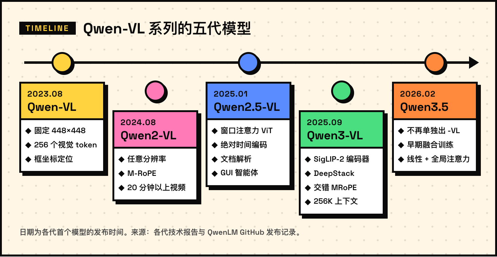
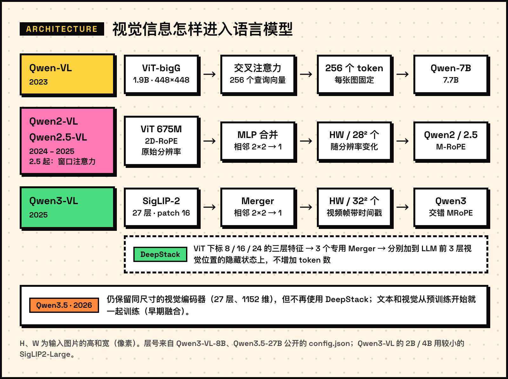
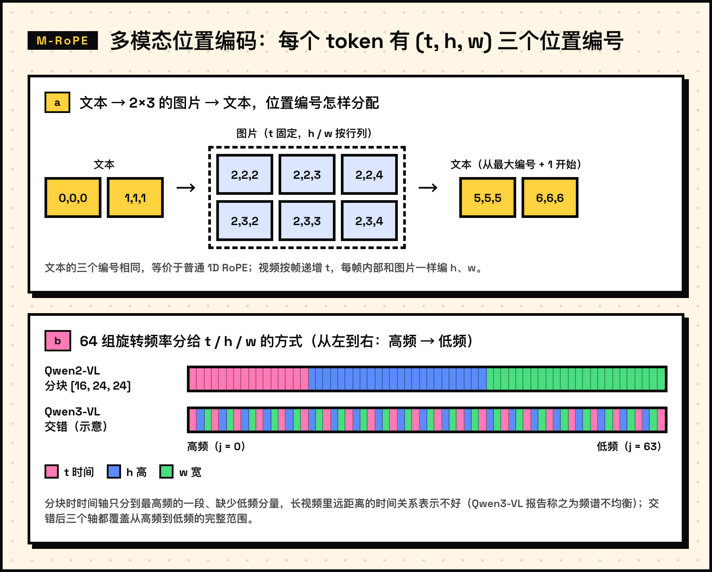
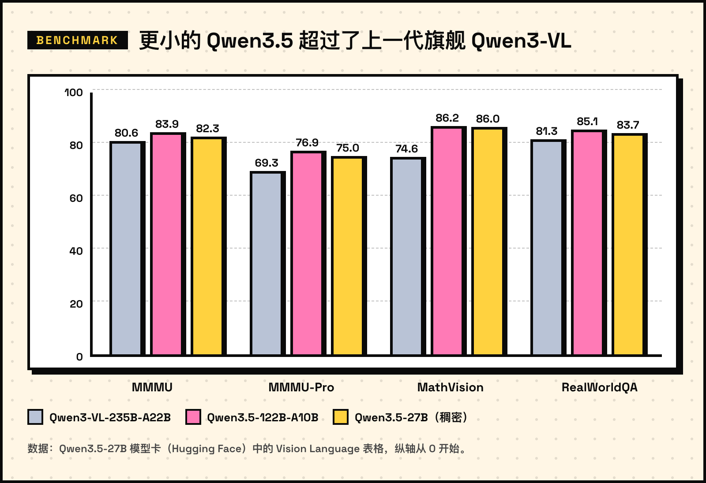

Qwen-VL 的发展路线：从 448 像素到原生多模态

从 2023 年 8 月的 Qwen-VL 到 2026 年 2 月的 Qwen3.5，通义千问的视觉语言模型走过了五代。前四代都以「-VL」单独命名，到了 Qwen3.5，视觉能力直接做进了主线模型。这篇文章按时间顺序梳理每一代改了什么、为什么这样改，主要看四个问题：图片怎样变成 token，位置和时间怎样编码，视觉和语言怎样融合，模型最后能做什么。

五代模型一览
| 代际 | 主要尺寸 | 视觉编码器 | 视觉 token | 位置编码 |
|---|---|---|---|---|
| Qwen-VL | 9.6B | ViT-bigG（1.9B） | 每张图固定 256 个 | 1D RoPE |
| Qwen2-VL | 2B / 7B / 72B | ViT（约 675M） | 每 28×28 像素 1 个 | M-RoPE |
| Qwen2.5-VL | 3B / 7B / 32B / 72B | ViT + 窗口注意力 | 每 28×28 像素 1 个 | M-RoPE + 绝对时间 |
| Qwen3-VL | 2B～32B，MoE 最大 235B | SigLIP-2 | 每 32×32 像素 1 个 | 交错 MRoPE + 文本时间戳 |
| Qwen3.5 | 0.8B～27B，MoE 最大 397B | 同 Qwen3-VL | 每 32×32 像素 1 个 | 交错 MRoPE |
1. Qwen-VL（2023.08）：固定分辨率，256 个查询向量
Qwen-VL 的结构很直接：视觉编码器用 OpenCLIP 的 ViT-bigG 初始化（1.9B），语言模型是 Qwen-7B（7.7B），两者之间是一个只有一层交叉注意力的适配器（0.08B），总参数 9.6B。
输入图片统一缩放到 448×448，按 14×14 切成 patch，ViT 输出 1024 个特征。把 1024 个特征直接送进语言模型太长，于是适配器用 256 个可学习的查询向量 去「读」这些特征，把长度压到固定的 256：
其中 是查询向量， 是 ViT 输出的特征，、 是二维绝对位置编码。论文特意把位置编码加在查询和键上，因为压缩之后细粒度的位置信息很容易丢失。
定位能力靠「把坐标写成文本」实现：框的坐标按图片宽高缩放到 的整数，
再写成 (x1,y1),(x2,y2) 形式的字符串，用 <box></box> 包起来；被指代的文字用 <ref></ref> 标出，图片特征前后加 <img></img>。这样不需要额外的坐标词表，语言模型直接「说出」框的位置。
训练分三步：先在 224×224 分辨率上用 14 亿对图文数据（从 50 亿对清洗而来，77.3% 英文、22.7% 中文）预训练，冻结语言模型，只训练视觉编码器和适配器；再把分辨率提到 448×448，解冻全部参数做多任务预训练；最后冻结视觉编码器做指令微调，得到 Qwen-VL-Chat。
这一代的瓶颈也很明显：一页 A4 文档缩到 448 像素，小字就看不清了；每张图固定 256 个 token，信息多的图不够用，信息少的图又浪费。
2. Qwen2-VL（2024.08）：任意分辨率 + M-RoPE
Qwen2-VL 要解决的正是固定分辨率的问题。2B、7B 于 2024 年 8 月 30 日发布，72B 和技术报告于 9 月 19 日发布。三个尺寸共用同一个约 675M 参数的 ViT，语言模型换成了 Qwen2。
2.1 按原始分辨率输入
思路来自 NaViT：不再把图片缩放到固定尺寸，而是按原始分辨率切 patch。为此 ViT 去掉了绝对位置编码，改用二维旋转位置编码（2D-RoPE）。ViT 输出后，相邻 2×2 个 patch 由一个 MLP 合并成 1 个 token，所以每个视觉 token 对应 像素：
（、 先调整为 28 的倍数。）一张 224×224 的图是 64 个 token，加上 <|vision_start|>、<|vision_end|> 共 66 个；一张 1092×8204 的长文档是 个。默认每张图 4～16384 个 token，可以用 min_pixels、max_pixels 按显存和速度调整：
from transformers import AutoProcessor
# 一个视觉 token 对应 28×28 像素
# 下面把每张图限制在 256～1280 个 token
processor = AutoProcessor.from_pretrained(
"Qwen/Qwen2-VL-7B-Instruct",
min_pixels=256 * 28 * 28,
max_pixels=1280 * 28 * 28,
)
论文的消融实验说明了动态分辨率的价值：平均每张图约 1924 个 token，OCRBench 得分 866，比固定 3136 个 token 的 786 分还高。
| 视觉 token | 平均 token 数 | InfoVQA | OCRBench |
|---|---|---|---|
| 固定 | 64 | 28.85 | 572 |
| 固定 | 576 | 65.72 | 828 |
| 固定 | 1600 | 74.99 | 824 |
| 固定 | 3136 | 77.27 | 786 |
| 动态 | 1924 | 75.89 | 866 |

2.2 M-RoPE：每个 token 有三个位置编号
普通的 RoPE 只有一维位置 ，第 组频率的旋转角为
越小，频率越高。M-RoPE 给每个 token 分配时间、高、宽三个编号 ，再把这 组频率分给三个轴，第 组使用它所属轴 的编号：
编号规则见下图 a：文本的三个编号相同，等价于普通 RoPE；图片的 固定，、 按行列递增；视频每帧递增 ；后一段内容从前一段的最大编号加 1 开始。这样图片的编号只增长到行数、列数的量级，而不是 token 总数，推理时更容易外推到更长的序列。
在 Qwen2-VL-7B 的配置里，mrope_section = [16, 24, 24]，head_dim 为 128，共 64 组频率按块分给三个轴：

论文的消融实验里，把 1D-RoPE 换成 M-RoPE 后，MathVista 从 39.2 提到 43.4，视频问答 NextQA 从 43.9 提到 46.0。
2.3 图片和视频统一处理
视频按每秒 2 帧采样，再用深度为 2 的 3D 卷积把相邻两帧合成一个时间块；为了统一，图片被当作两帧相同的画面。每段视频最多 16384 个 token。靠这些改动，Qwen2-VL 能理解 20 分钟以上的视频，同时支持多语言 OCR，也能作为智能体操作手机、机器人等设备。
3. Qwen2.5-VL（2025.01）：更快的编码器、绝对时间、能动手
Qwen2.5-VL 于 2025 年 1 月 28 日发布 3B、7B、72B，2 月 20 日发布技术报告，3 月 25 日补充了 32B。
3.1 ViT 改用窗口注意力
原始分辨率输入带来了新问题：全局注意力的计算量随 patch 数 平方增长。Qwen2.5-VL 重新设计了 32 层的 ViT，只有 4 层（下标 7、15、23、31，即每 8 层中的最后一层）保留全局注意力，其余层只在 112×112 像素（8×8 个 patch）的窗口内计算：
以 1792×1792 的图片为例，，窗口层的注意力计算量约为全局层的 。同时 ViT 改用 RMSNorm 和 SwiGLU，和语言模型的结构保持一致。
3.2 时间编号对齐绝对时间
Qwen2-VL 里视频的时间编号就是帧组的序号，。同样相隔 10 个编号，在 1 fps 和 4 fps 的视频里代表的时长完全不同，模型没法从编号里读出「过了多久」。Qwen2.5-VL 引入动态帧率训练，并让时间编号与真实时间成正比：
其中 是第 个帧组在视频中的时刻（秒）。编号的间隔因此直接对应经过的时间，模型可以理解长达数小时的视频，并把事件定位到秒级。
3.3 坐标、文档与智能体
- 定位改用基于图片实际尺寸的绝对坐标，不再归一化：在原始分辨率输入下，相对坐标反映不了物体的真实大小。
- 文档解析统一输出 QwenVL HTML 格式，表格、图表、公式、插图都用同一种结构表示。
- 据技术报告，预训练数据从 Qwen2-VL 的 1.2 万亿 token 扩到约 4 万亿 token。
- 可以作为视觉智能体，直接操作电脑和手机界面。
4. Qwen3-VL（2025.09）：多层融合与 256K 上下文
Qwen3-VL 的旗舰 235B-A22B 于 2025 年 9 月 23 日发布，之后陆续发布 30B-A3B、4B、8B、2B、32B，每个尺寸都有 Instruct 和 Thinking 两个版本，技术报告于 11 月公开。语言模型基于 Qwen3，原生支持 256K 上下文，可扩展到 1M。
4.1 视觉编码器换成 SigLIP-2
视觉编码器改用 SigLIP-2（默认 SO-400M；2B、4B 用 300M 的 Large 版），在官方权重的基础上继续做动态分辨率训练。patch 从 14 变成 16，合并 2×2 之后每个 token 对应 像素：
4.2 交错 MRoPE
技术报告指出，把频率按块分给 t、h、w 会让频谱不均衡，影响长视频理解。以 Qwen2-VL 的分块方式为例，时间轴只拿到最高频的 16 组，缺少低频分量，远距离的时间关系表示不好。Qwen3-VL 改为交错分配，让三个轴都覆盖从高频到低频的完整范围（示意）：
Qwen3-VL-8B 的配置里是 mrope_section = [24, 20, 20]，并设置了 mrope_interleaved: true。
4.3 DeepStack：把 ViT 中间层也送进去
此前只有 ViT 最后一层的输出进入语言模型。Qwen3-VL 借鉴 DeepStack，额外取出 ViT 三个中间层的特征，经过各自的 Merger，加到语言模型前三层视觉 token 位置的隐藏状态上：
其中 是视觉 token 的位置， 是 ViT 下标为 的层的输出，Qwen3-VL-8B 的配置取 。因为是加到已有的隐藏状态上，序列长度不变，低层的细节和高层的语义都能进入语言模型。
4.4 文本时间戳
Qwen2.5-VL 让编号对齐绝对时间，带来两个问题：长视频的时间编号又大又稀疏；训练时需要覆盖各种帧率的均匀采样，数据构造成本高。Qwen3-VL 改为在每个时间块前直接插入文本时间戳，例如 <3.0 seconds>，训练时同时使用秒和「时:分:秒」两种格式。代价是上下文稍长，换来更准确的视频定位和密集描述。
4.5 训练
预训练分四个阶段，逐步拉长上下文：
| 阶段 | 目标 | 训练的参数 | token 数 | 序列长度 |
|---|---|---|---|---|
| S0 | 视觉语言对齐 | 只训 Merger | 67B | 8,192 |
| S1 | 多模态预训练 | 全部 | 约 1T | 8,192 |
| S2 | 长上下文预训练 | 全部 | 约 1T | 32,768 |
| S3 | 超长上下文适配 | 全部 | 100B | 262,144 |
损失函数从按样本平均改为按 token 计算并做平方根归一化，用来平衡纯文本数据和多模态数据的贡献。报告称 Qwen3-VL 的纯文本能力在一些基准上超过了对应的纯文本模型。能力上，2D 定位改用相对坐标，新增 3D 定位，能根据截图或视频生成 Draw.io / HTML / CSS / JS 代码，也能操作电脑和手机界面。
5. Qwen3.5（2026.02）：不再单独做「-VL」
2026 年 2 月 16 日发布的 Qwen3.5 本身就是视觉语言模型。官方的说法是文本和视觉做「早期融合」训练，在相近规模下超过 Qwen3-VL。从这一代起，视觉能力直接做进主线模型，Hugging Face 上也没有再出现单独的 Qwen3.5-VL 系列。首个模型是 397B-A17B 的 MoE；2 月 24 日发布 122B-A10B、35B-A3B 和 27B，3 月 2 日发布 9B、4B、2B、0.8B。
从公开的 Qwen3.5-27B 配置能看出几处变化：
- 仍然有视觉编码器，尺寸和 Qwen3-VL 相同（27 层、1152 维、patch 16），但
deepstack_visual_indexes为空，不再使用 DeepStack。 - 语言模型沿用 Qwen3-Next 的混合架构：64 层里每 3 层 Gated DeltaNet 线性注意力配 1 层门控全局注意力，并加入多 token 预测（MTP）；397B-A17B 等型号是高稀疏度的 MoE。
- 保留交错 MRoPE（
mrope_section = [11, 11, 10]，只对四分之一的维度做旋转），默认上下文 262,144 个 token。 - 词表从约 15 万扩到 25 万，支持的语言和方言从 119 种增加到 201 种。
训练系统上，官方博客介绍了把视觉和语言两部分的并行策略解耦，在图文视频混合数据上做到接近纯文本训练的吞吐。

效果上，稠密的 Qwen3.5-27B 在 MMMU（82.3 对 80.6）、MathVision（86.0 对 74.6）等视觉基准上已经超过上一代旗舰 Qwen3-VL-235B-A22B。
之后的版本延续了这条路线：2026 年 8 月的 Qwen3.8-Max 直接接收文本、图像和视频输入（见 Roboflow 的评测）；9 月的 Qwen3.8-Omni 又把音频和空间音频统一进同一个 token 序列。
6. 四条主线
把五代放在一起看，可以归纳成四条线：
- 分辨率：固定 448×448 → 原始分辨率，每 28×28 像素一个 token → 用窗口注意力控制 ViT 的计算量 → SigLIP-2，每 32×32 像素一个 token。
- 位置与时间：1D RoPE → M-RoPE 的 (t, h, w) 三轴编号 → 时间编号对齐绝对时间 → 交错 MRoPE 加文本时间戳。
- 视觉与语言的连接：交叉注意力压成 256 个 token → MLP 合并 2×2 → DeepStack 把多层视觉特征注入语言模型 → 从预训练开始的早期融合，DeepStack 又被去掉。
- 能力：描述、问答、定位 → 长视频、多语言 OCR、智能体 → 文档解析、操作电脑和手机 → 256K 长上下文、视觉编程、3D 定位 → 统一的多模态智能体。
连接视觉和语言的模块整体在变简单：从带 256 个查询的交叉注意力，到两层 MLP；Qwen3-VL 加入的 DeepStack 在 Qwen3.5 里也被去掉，两种模态的对齐更多靠大规模的早期融合训练完成。视觉逐渐从「接在语言模型上的模块」变成模型本来就有的一种输入。
7. 写在最后
这几代模型我在项目里都用过：在咪咕做流式足球视频理解时，基座是 Qwen2.5-VL-7B，原生每 32 帧有 1,792 个视觉 token，直播场景下上下文增长很快，我自己做了一个因果时序投影器，把它压到 56 个；在百度做长视频切片的向量表征时，用的是 Qwen3-VL-Embedding-8B；个人的购物 Agent 后训练项目，则在 Qwen3.5-2B 上做 LoRA SFT 和多轮在线 GRPO。回头看，视觉 token 的数量和位置编码，始终是工程上最先碰到的问题，也正是每一代 Qwen-VL 都在改进的地方。
参考资料
- Bai et al. Qwen-VL: A Versatile Vision-Language Model for Understanding, Localization, Text Reading, and Beyond. arXiv:2308.12966, 2023.
- Wang et al. Qwen2-VL: Enhancing Vision-Language Model's Perception of the World at Any Resolution. arXiv:2409.12191, 2024.
- Qwen Team. Qwen2-VL: To See the World More Clearly. 2024.
- Bai et al. Qwen2.5-VL Technical Report. arXiv:2502.13923, 2025.
- Qwen Team. Qwen3-VL Technical Report. arXiv:2511.21631, 2025.
- QwenLM/Qwen3-VL：Qwen2-VL 到 Qwen3-VL 各版本的发布时间。
- Qwen Team. Qwen3.5: Towards Native Multimodal Agents. 2026.
- Hugging Face 上的模型配置：Qwen2-VL-7B-Instruct、Qwen3-VL-8B-Instruct、Qwen3.5-27B。
- Dehghani et al. Patch n' Pack: NaViT, a Vision Transformer for any Aspect Ratio and Resolution. 2023.
- Su et al. RoFormer: Enhanced Transformer with Rotary Position Embedding. 2021.
- Meng et al. DeepStack: Deeply Stacking Visual Tokens is Surprisingly Simple and Effective for LMMs. NeurIPS 2024.
- Tschannen et al. SigLIP 2: Multilingual Vision-Language Encoders with Improved Semantic Understanding, Localization, and Dense Features. 2025.
- Qwen Team. Qwen3.8-Omni: Towards Native Omni-Modal Agents. 2026.
- Roboflow. Qwen3.8-Max for Vision: Benchmarks, Strengths, and Real-World Tests. 2026.
文中的插图均为本文绘制，数据和配置来自以上资料。